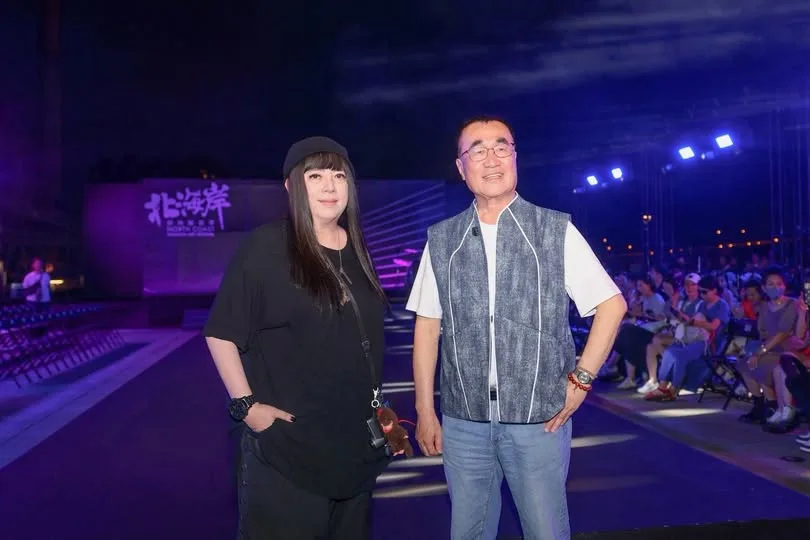
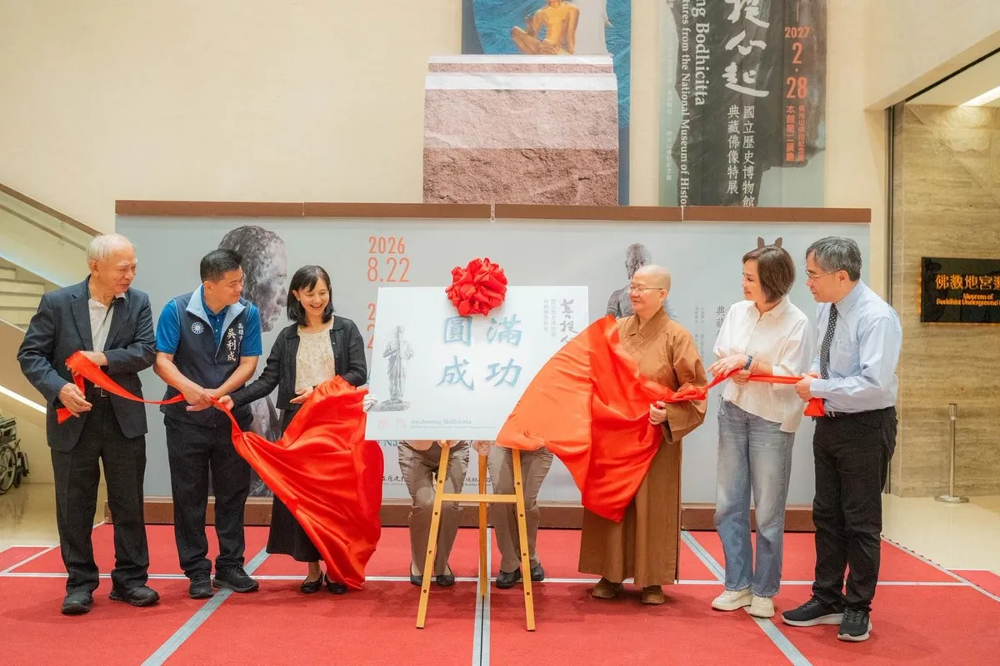
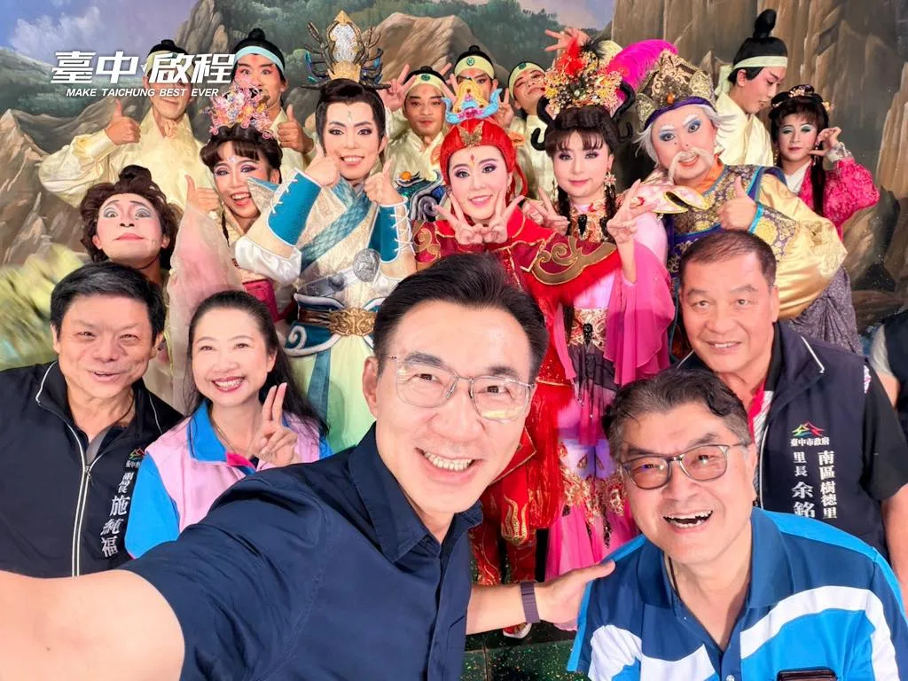

妃常女力‧陳亭妃UCWlv4Ixpdv0QjkdCL3yfGZw

台南旅遊盡賞400年風華！陳亭妃推出「五大觀光軸」 台南值得你多住一天！
Posts
台南旅遊盡賞400年風華！陳亭妃推出「五大觀光軸」 台南值得你多住一天！


@su.chiaohui:感謝雲林鄉親相挺巧慧！ 在新北市，有80萬雲林鄉親在這裡生活，大家一起打拚，一起讓新北持續前進。 未來，我要舉辦「雲林日」，推廣雲林的好產品、好文化，更要推動「AI技職人才交流計畫」，串連新北、雲林產官學界，讓人才交流、促進兩個城市的發展，更讓產業升級！ 我們一起努力，讓新北和雲林攜手向前，一起進步、一起贏！


陳亭妃AI動畫政見影片 「五大觀光軸」 串起台南400年風華 打造「留得住人」的台南

@schuanglawyer:今天非常幸運✨感謝天公作美，在我們準備開始掃桃園觀光夜市前，從傍晚開始下的雨就停了！ 原本擔心開學前夕人潮會受影響，沒想到一走進夜市，迎面而來的是滿滿的熱情問候與人潮。 感謝特地冒雨前來等我的市民，有一對年輕夫妻帶著五個活潑可愛的小寶貝，專程來為我加油。看見大家高舉杰伴、企鵝阿爸應援手板，給了我很大的力量。還巧遇中壢國小的同學、我的老班長，直接開啟同學會模式。 謝謝詹德男會長熱情帶路，讓我們大飽口福，還跟桃園隊夥伴一起PK套圈圈，重溫美好的童年時光。每個人、每個世代，都可以找到自己喜歡的事，夜市就是如此神奇又迷人的地方✨ 世杰向大家承諾，未來擔任市長，我會繼續守護這份美好！不只要升級桃園夜市，還要串聯大廟、藝文特區，打造觀光新廊道。讓在地商家賺大錢，更要讓國際旅客把桃園列為必訪首選，打造桃園成為走向國際的指標城市🌍 桃園的未來，我們一起大步向前走！心桃園，動起來 💖
讓好戲走進社區、讓文化成為日常，就是 #幸福旗艦 的 #文化臺中！🎭 今天風雨不小，仍澆不熄南區親子看戲的熱情。啟臣與大小朋友一起欣賞 #風神寶寶兒童劇團 帶來的《蟾蜍精的冒險》。劇團以深厚的歌仔戲底蘊，將傳統戲曲轉化成孩子看得懂、看得開心的親子好戲，難怪現場掌聲不斷！ 感謝李中愛台中、真誠用心-林霈涵議員用心爭取，把精彩表演帶到南區，陪大小朋友一起抓住暑假的尾巴，留下難忘回憶。 未來，不只大型場館有好戲，臺中的街頭巷尾、社區鄰里也都要有舞台！啟臣要推動 #巷弄文化小蜜蜂 ，把更多優質表演送進社區；更要做到 #週週有主題 #月月有節日 ，讓市民不必跑遠，就能親近藝術、享受文化。讓藝文遍地開花、好戲全年不斷，這就是 #文化旗艦城 最溫暖的日常！❤️ #臺中啟程 #打造旗艦城 #臺中味 #TaichungWay #親子時光 #文化味

第一次穿這麼漂亮的衣服，是針織女王 GIOIA PAN 潘怡良 設計師幫我設計的。 在北海岸時尚藝術季，不只吹海風，也讓我走路有風。 好看吧？

第一次穿這麼漂亮的衣服，是針織女王 GIOIA PAN 潘怡良 設計師幫我設計的。 在北海岸時尚藝術季，不只吹海風，也讓我走路有風。 好看吧？

敢去就有路！巧慧帶大家一起迎接新時代！ 非常感謝今天爆場的客家鄉親給我支持和力量，更感謝金曲歌后 米莎 Misa特別到現場獻唱 ，給我祝福。 在米莎的金曲 #腳跡 中有一句歌詞「敢去就有路。」聽了真的特別有感觸。從一開始宣布參選新北市長，到今天最後倒數90天，我和大家一起前進，也越來越多人站出來和我們並肩前行。 今天我和大家報告我們的客家政見： ✅廣入校園社區，推廣客語及技藝課程 ✅擴大辦理 #客家信仰文化活動，挹注客家文史團體和地方社團 ✅媒合產業 #跨域合作，舉辦以客家為主體的商展和影展 ✅盤點低利用公有空間，提供客家青年更多新創孵育基地 ✅結合新科技，打造 #客家文化AI資料庫、#新北AI客語學習平台 ✅擴大 #伯公照護站設置，#客家幣使用範圍 最後階段，我們一起拚，一起讓新北市迎接新時代！


暑假尾聲，林延鳳議員舉辦水上親子活動，最適合帶孩子一起玩水、開心放電！ ⠀ 爸媽帶孩子出門，不只希望他們玩得開心，心裡也會擔心通學環境、衛生和活動安全。而延鳳議員長期深耕士林北投，除了關心兒童福利與育兒資源，也持續為校園安全、通學環境及友善親子空間發聲。 ⠀ 育兒不能是「孤獨育兒」，更不該成為一場考驗家長體力與運氣的障礙賽。台北應該用完善的環境與政策，跟家長一起照顧孩子。因此，我提出「家長版1999」、帶孩子走進更多藝文場所的「親子同行卡」，以及讓10萬名家長獲得喘息支持的「家庭一站通」。 ⠀ 未來，我會和延鳳一起努力，讓台北成為一座孩子安心成長、家長有人支持的城市。 #台北順起來 #你的市長沈伯洋


走進大坑9號步道，和大家一起健走、流流汗，也感受大坑滿滿的自然活力🌿🥾 大坑有好山、好風景，更有豐富的生態、歷史文化和農特產品，是台中珍貴的城市瑰寶。但要讓更多人走進大坑，交通一定要更方便！ 我承諾：捷運綠線延伸大坑，首任四年一定動工、力拚完工！ 未來更要串聯公車路網，完善最後一哩路，讓捷運帶動人潮，也帶動大坑整體觀光發展。 讓交通建設串起好山、好景、好生活，讓更多人看見大坑，也看見台中的美好❤️

有一件事， 我這幾年一直在做， 想像台南未來的樣子。 十年後的台南， 會是什麼模樣？ 孩子長大後， 希望他們在哪裡工作？生活？ 年輕人回到台南， 能不能找到一份有穩定的工作？ 農民辛苦了一輩子， 能不能因為科技輔助，讓土地有更好的價值？ 老人家需要醫療的時候， 能不能不用舟車勞頓，就近得到最好的照顧？ 這些問題， 我想了很久。 慢慢地， 每一條路， 每一個方向， 開始在我的腦海裡變得清楚。 農業科技、 半導體與AI、 綠能與智慧科技、 醫療科技。 從溪北到溪南， 從城市到農村， 從產業到生活。 我想做的， 是讓台南原本就有力量擴展出去。 讓農業更有競爭力， 讓科技產業留下更多人才， 讓醫療、交通、觀光與生活， 都跟著城市一起進步。 所以這些日子， 我一直在走、一直在看、一直在聽。 看城市的每一個角落， 也看每一個台南人對未來的期待。 因為我相信， 一座城市的藍圖， 不能只畫在紙上。 它要烙印在心裡， 再一步一步， 變成我們每天看得見的生活。 台南的藍圖， 早就印在我的腦海裡。 現在， 我要和大家一起， 把藍圖一步一步變成台南的未來。

感謝雲林鄉親相挺巧慧！ 在新北市，有80萬雲林鄉親在這裡生活，大家一起打拚，一起讓新北持續前進。 未來，我要舉辦 #雲林日，推廣雲林的好產品、好文化，更要推動 #AI技職人才交流計畫，串連新北、雲林產官學界，讓人才交流、促進兩個城市的發展，更讓產業升級！ 我們一起努力，讓新北和雲林攜手向前，一起進步、一起贏！

我高中讀的是位於城區的台中女中，城區承載著我青春歲月中最美好的回憶。 可惜的是，城區這些年逐漸走向沒落，如何讓城區重新找回往日魅力，一直是我心中的目標。 未來我會參考英國、歐洲城市的經驗，活化城區的文物與歷史建築，轉型為文化觀光亮點，讓老城區重新熱鬧起來！ #心存大台中 #市長換欣_台中創新

今天非常幸運✨感謝天公作美，在我們準備開始掃桃園觀光夜市前，從傍晚開始下的雨就停了！ 原本擔心開學前夕人潮會受影響，沒想到一走進夜市，迎面而來的是滿滿的熱情問候與人潮。 感謝特地冒雨前來等我的市民，有一對年輕夫妻帶著五個活潑可愛的小寶貝，專程來為我加油。看見大家高舉杰伴、企鵝阿爸應援手板，給了我很大的力量。還巧遇中壢國小的同學、我的老班長，直接開啟同學會模式。 謝謝詹德男會長熱情帶路，讓我們大飽口福，還跟桃園隊夥伴一起PK套圈圈，重溫美好的童年時光。每個人、每個世代，都可以找到自己喜歡的事，夜市就是如此神奇又迷人的地方✨ 世杰向大家承諾，未來擔任市長，我會繼續守護這份美好！不只要升級桃園夜市，還要串聯大廟、藝文特區，打造觀光新廊道。讓在地商家賺大錢，更要讓國際旅客把桃園列為必訪首選，打造桃園成為走向國際的指標城市🌍 感謝每一雙緊握的手、每一句世杰加油！感謝桃園觀光夜市管理委員會詹德男會長及幹部們、北桃園競總簡智翔副總幹事 @powerful_chien 、余信憲議員 @yu.councilor 、李光達議員 @lee_kung_da 、黃瓊慧議員 @qn_taiwan 、黃家齊議員 @jack790218 、李柏瑟議員候選人 @leeposhe_taoyuanmama 、東埔里江慶尚里長，佮世杰作伙來踅夜市！ 桃園的未來，我們一起大步向前走！心桃園，動起來 💖
何欣純健走大坑 「搭捷運來爬山不是夢」 台中市長候選人、立法委員何欣純今（30） […] 〈 何欣純健走大坑 「搭捷運來爬山不是夢」 〉這篇文章最早發佈於《 何欣純官方網站｜2026 台中市長候選人 》。

@schuanglawyer:在桃園觀光夜市，巧遇中壢國小的同學，是我們當年的班長！

跨越95年踏實堅毅的步伐，走在弘揚母娘神威道路上。 今天是瑤池金母聖誕千秋，一早我與 @hou.yuih 侯友宜市長，一起到蘆洲慈惠堂參拜，拜訪95歲的林堂主。 堂主的奉獻，就如母娘，「為他人想，以慈悲對待眾生。」 還記得，蘆洲慈惠堂過去使用桶裝瓦斯，在引進天然氣管線時，遇上了許多問題，那時我用盡所能，與地方溝通，最後終於完成。 「用心，真理妙法即在眼前」，凡事用心，無愧於心，便能事事順心。 進道場修「佛緣」，與人相處要有「人緣」。我有鄉親的支持，有侯市長的認可，有母娘慈悲的關懷。 未來蘆洲醫院的興建、蘆社大橋的規劃，我都會在侯友宜市長的基礎上，讓三蘆地區有更完善醫療照護，也讓這裡能夠蓬勃發展。 我與蘆洲的淵源很深，願意付出我的一生。

上週末，佛陀紀念館迎來一場難得的人文盛事——《菩提行起—國立歷史博物館典藏佛像特展》正式開幕。 走進展場，看見一尊尊承載歲月的佛像，欣賞的不只是藝術之美，更是一場與慈悲、智慧相遇的旅程。 「發菩提心，利樂有情。」佛教造像不只是珍貴的藝術與歷史資產，也承載著千百年來人們對慈悲、智慧與平安的祝福。這次國立歷史博物館與佛光山第三度攜手，將珍貴典藏帶到南台灣，讓高雄鄉親就近感受佛法與藝術交融的美好。 展覽亮點之一，是臺灣雕塑先驅黃土水大師的《釋迦出山》，描繪釋迦牟尼佛走出深山、回歸人間的身影，也帶給我們一份深刻的提醒：真正的覺悟，不在向外追逐，而在向內觀照。 #高雄 自古就是多元文化與信仰交會的港灣。從左營舊城的歷史信仰、旗津的媽祖遶境，到佛光山吸引眾多人潮前來朝聖，不同文化與信仰在這座城市交會，也形塑出高雄人敦厚、善良、樂於分享的人情味。 願這盞智慧之燈，照亮城市，也讓每一個人在忙碌的生活裡，都能找到一方安定心念的所在。 這幾天天氣仍然不太穩定，如果想不到室內行程，不妨到佛陀紀念館走走、看看展，在藝術與人文之間沉澱片刻，也為自己留一段安靜的時光。 感謝國立歷史博物館、佛光山佛陀紀念館以及所有工作人員的用心，祝福展覽圓滿成功，也願大家平安喜樂、法喜充滿。

@a_chun1973:🥾 週末健走大坑，未來搭捷運來爬山不是夢！ 今天來到大坑9號步道，和大家一起走走、流流汗，也感受大坑的好山好風景🌿 大坑是台中的城市瑰寶，要讓更多人來走走，交通一定要更方便！ 🚇 捷運綠線延伸大坑，我承諾首任四年一定動工、力拚完工！ 未來串聯捷運、公車與周邊景點，讓大家搭捷運就能來爬山，也讓交通帶動大坑觀光發展。

#發兩萬、#打皮蛇、#卡好用！今晚來到西區均安宮，一上臺就和王育敏、羅廷瑋委員一起喊出三句最實在的「幸福加給」💪 國民黨在國會持續爭取全民普發2萬元；在臺中，將優先針對65歲以上長者，以及重症、弱勢等高風險族群，經醫師評估後補助帶狀疱疹疫苗，未來再視財政逐步擴大補助範圍；敬老愛心卡每月1,000點不減，當月未使用完的點數可累積，並於年底歸零。計程車、掛號、指定藥局、YouBike及國民運動中心都能用，也規劃 #一定額度可以到農漁會購物，真正「卡好用」！ 啟臣把競選總部設在西區，因為這裡承載著臺中的根與靈魂。未來要活化歷史空間、推動 #一市場一特色，改善公有市場的燈光、空調及整體購物環境，並串聯商圈、購物節與會展人流，讓老城找回榮光，也為年輕人創造新機會。 從長輩照顧到親子友善，從百年市場到文化復興，臺中升級不只是蓋更多建築，更要讓每一代都能在這裡安居、圓夢！ #臺中升級 #幸福加給 #西區 #舊城復興 #臺中啟程 #打造旗艦城

🎈 藝啟動一動 親子歡樂城｜大里環保公園場 親子歡樂城第四場，這次來到大里！ 9/6（日）下午，#大里環保公園（大里區德芳二路與永大街口）準備了滑步車體驗、親子闖關，還有下午4點登場的舞台表演。從動態體驗到精彩演出，讓孩子一路玩到底，每個環節都有不同樂趣！ 活動免費參加，也歡迎自備野餐墊，在草地上找個位置坐坐、欣賞表演。 🎁 提前報名還可領取限量精美小禮物，數量有限，記得先完成報名！ 報名連結：https://www.beclass.com/rid=30527cc6a7c3b4130bad #藝啟動一動 #親子歡樂城

感謝雲林鄉親相挺巧慧！ 在新北市，有80萬雲林鄉親在這裡生活，大家一起打拚，一起讓新北持續前進。 未來，我要舉辦 #雲林日，推廣雲林的好產品、好文化，更要推動 #AI技職人才交流計畫，串連新北、雲林產官學界，讓人才交流、促進兩個城市的發展，更讓產業升級！ 我們一起努力，讓新北和雲林攜手向前，一起進步、一起贏！

💃亭妃fighting💪 爭取全國首創的K-12舞蹈教育基地！ 今天我和怡珍一起到中山國中會勘，邀請國教署彭富源署長南下，一起把進學國小、中山國中、家齊高中三校的舞蹈教育資源串起來。 我爭取3億3,500萬元推動專業舞蹈教室、實驗劇場、400人以上演藝廳，讓孩子從「練舞」走向創作、展演與交流。 未來目標是跨縣市招收優秀舞蹈人才，讓全台優秀的舞蹈孩子都能來台南，讓「台南舞蹈」成為400年文化城市重要發展另類軟實力。 今天國教署長允諾，三週內會召開跨單位工作小組，一起把基地規劃往前推！ #K12舞蹈教育基地 #台南舞蹈 #文化軟實力 #妃常女力 #陳亭妃

讓好戲走進社區、讓文化成為日常，就是 #幸福旗艦 的 #文化臺中！🎭 今天風雨不小，仍澆不熄南區親子看戲的熱情。啟臣與大小朋友一起欣賞 #風神寶寶兒童劇團 帶來的《蟾蜍精的冒險》。劇團以深厚的歌仔戲底蘊，將傳統戲曲轉化成孩子看得懂、看得開心的親子好戲，難怪現場掌聲不斷！ 感謝李中愛台中、真誠用心-林霈涵議員用心爭取，把精彩表演帶到南區，陪大小朋友一起抓住暑假的尾巴，留下難忘回憶。 未來，不只大型場館有好戲，臺中的街頭巷尾、社區鄰里也都要有舞台！啟臣要推動 #巷弄文化小蜜蜂 ，把更多優質表演送進社區；更要做到 #週週有主題 #月月有節日 ，讓市民不必跑遠，就能親近藝術、享受文化。讓藝文遍地開花、好戲全年不斷，這就是 #文化旗艦城 最溫暖的日常！❤️ #臺中啟程 #打造旗艦城 #臺中味 #TaichungWay #親子時光 #文化味

@hammer__lee:第一次穿這麼漂亮的衣服，是針織女王 GIOIA PAN 潘怡良 設計師幫我設計的。 在北海岸時尚藝術季，不只吹海風，也讓我走路有風。 好看吧？

從幸福城到旗艦城，臺中的下一步，要讓每個生活問題都有解方！💪 今天受邀出席 #城市治理綜合座談，與柯文哲理事長、民眾黨黃國昌主席及各界專家交流。城市治理不是喊口號，而是要把市民每天面對的問題，一件一件解決。 在主題分享中，我談到臺中的下一階段，要發揮精密製造優勢，發展AI機器人與會展經濟，結合海空雙港，讓世界看見臺中、讓訂單走進臺中，從幸福城升級為代表臺灣的旗艦城市。 主題分享後，進入QA階段，大家問得直接，我也具體回答。八年前，市民最關心空氣；現在，交通排第一。免費公車不是只少收10元，更要重整路線、增加班次、提升準點率並改善司機待遇；透過四大轉運中心，串聯快速公車、YouBike與社區接駁。捷運必須多線齊發，清泉崗機場也應朝千萬人次規模擴建，讓 #中進中出 更加便利。 有市民問到中西區老屋與閒置空間的問題。對我來說，中西區不是臺中的過去，而是找回城市靈魂、重新出發的地方。我把 #競選總部設在西區，就是要從舊城出發，活化百年市場與新民街倉庫群，引進音樂、展演及青年創意，讓舊城真正活起來。 也有市民關心，臺中能不能擁有自己的親子探索樂園？我支持積極評估，並持續增加親子設施、特色公園與共融遊戲場，讓年輕人敢生、養得起，更讓整座城市陪孩子好好長大。 近300萬鄉親一起組成最強臺中隊，臺中好，中臺灣就更好；中臺灣更好，臺灣一定更好！ #從幸福城到旗艦城 #治理從地方開始 #臺中啟程 #打造旗艦城

敢去就有路！巧慧帶大家一起迎接新時代！ 非常感謝今天爆場的客家鄉親給我支持和力量，更感謝金曲歌后 #米莎 特別到現場獻唱 ，給我祝福。 在米莎的金曲 #腳跡 中有一句歌詞「敢去就有路。」聽了真的特別有感觸。從一開始宣布參選新北市長，到今天最後倒數90天，我和大家一起前進，也越來越多人站出來和我們並肩前行。 今天我和大家報告我們的客家政見： ✅廣入校園社區，推廣客語及技藝課程 ✅擴大辦理 #客家信仰文化活動，挹注客家文史團體和地方社團 ✅媒合產業 #跨域合作，舉辦以客家為主體的商展和影展 ✅盤點低利用公有空間，提供客家青年更多新創孵育基地 ✅結合新科技，打造「客家文化AI資料庫」、「新北AI客語學習平台」 ✅擴大 伯公照護站設置，客家幣使用範圍 最後階段，我們一起拚，一起讓新北市迎接新時代！


上週末，佛陀紀念館迎來一場難得的人文盛事——《菩提行起—國立歷史博物館典藏佛像特展》正式開幕。 走進展場，看見一尊尊承載歲月的佛像，欣賞的不只是藝術之美，更是一場與慈悲、智慧相遇的旅程。 「發菩提心，利樂有情。」佛教造像不只是珍貴的藝術與歷史資產，也承載著千百年來人們對慈悲、智慧與平安的祝福。這次國立歷史博物館與佛光山第三度攜手，將珍貴典藏帶到南台灣，讓高雄鄉親就近感受佛法與藝術交融的美好。 展覽亮點之一，是臺灣雕塑先驅黃土水大師的《釋迦出山》，描繪釋迦牟尼佛走出深山、回歸人間的身影，也帶給我們一份深刻的提醒：真正的覺悟，不在向外追逐，而在向內觀照。 #高雄 自古就是多元文化與信仰交會的港灣。從左營舊城的歷史信仰、旗津的媽祖遶境，到佛光山吸引眾多人潮前來朝聖，不同文化與信仰在這座城市交會，也形塑出高雄人敦厚、善良、樂於分享的人情味。 願這盞智慧之燈，照亮城市，也讓每一個人在忙碌的生活裡，都能找到一方安定心念的所在。 這幾天天氣仍然不太穩定，如果想不到室內行程，不妨到佛陀紀念館走走、看看展，在藝術與人文之間沉澱片刻，也為自己留一段安靜的時光。 感謝國立歷史博物館、佛光山佛陀紀念館以及所有工作人員的用心，祝福展覽圓滿成功，也願大家平安喜樂、法喜充滿。

🥾 週末健走大坑，未來搭捷運來爬山不是夢！ 今天來到大坑9號步道，和大家一起走走、流流汗，也感受大坑的好山好風景🌿 大坑是台中的城市瑰寶，要讓更多人來走走，交通一定要更方便！ 🚇 捷運綠線延伸大坑，我承諾首任四年一定動工、力拚完工！ 未來串聯捷運、公車與周邊景點，讓大家搭捷運就能來爬山，也讓交通帶動大坑觀光發展。

#發兩萬、#打皮蛇、#卡好用！今晚來到西區均安宮，一上臺就和王育敏、羅廷瑋委員一起喊出三句最實在的「幸福加給」💪 國民黨在國會持續爭取全民普發2萬元；在臺中，將優先針對65歲以上長者，以及重症、弱勢等高風險族群，經醫師評估後補助帶狀疱疹疫苗，未來再視財政逐步擴大補助範圍；敬老愛心卡每月1,000點不減，當月未使用完的點數可累積，並於年底歸零。計程車、掛號、指定藥局、YouBike及國民運動中心都能用，也規劃 #一定額度可以到農漁會購物，真正「卡好用」！ 啟臣把競選總部設在西區，因為這裡承載著臺中的根與靈魂。未來要活化歷史空間、推動 #一市場一特色，改善公有市場的燈光、空調及整體購物環境，並串聯商圈、購物節與會展人流，讓老城找回榮光，也為年輕人創造新機會。 從長輩照顧到親子友善，從百年市場到文化復興，臺中升級不只是蓋更多建築，更要讓每一代都能在這裡安居、圓夢！ #臺中升級 #幸福加給 #西區 #舊城復興 #臺中啟程 #打造旗艦城